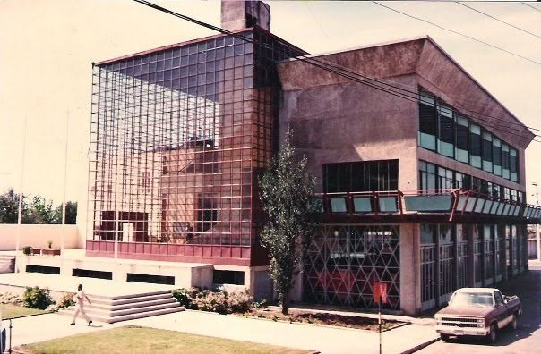
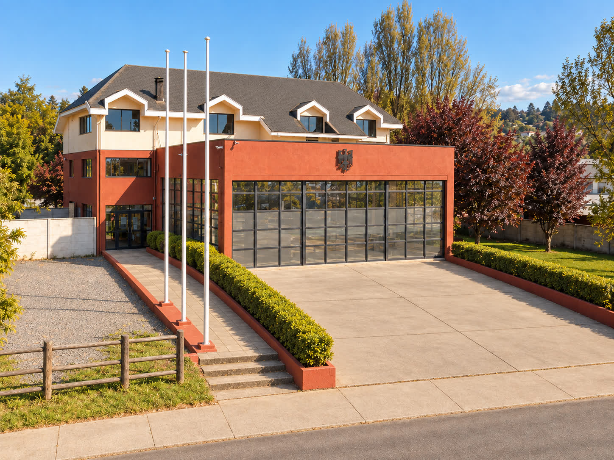

A lo largo de su historia, la Quinta Compañía de Bomberos de Talcahuano ha contado con dos cuarteles, los cuales han sido testigos del crecimiento institucional y de la formación de distintas generaciones de bomberos voluntarios.
Nuestro primer cuartel (1908 – 2001)
Nuestro primer cuartel estuvo ubicado en el Cuartel Central del Cuerpo de Bomberos de Talcahuano, en Avenida Cristóbal Colón N.º 797, en pleno centro de la ciudad. Durante 93 años, estas instalaciones albergaron a nuestros voluntarios, formando parte importante de nuestra historia y tradiciones.

Nuestro actual cuartel (2001 – actualidad)
Nuestro actual cuartel se encuentra emplazado en Villa Independencia, en el acceso sur de Talcahuano. Su construcción comenzó en 1998, entrando en funcionamiento en 2001 y culminando sus obras en octubre de 2009.

El edificio cuenta con 1.320 m² construidos sobre un terreno de 4.000 m², puesto a disposición de la Compañía por la comunidad del sector Denavi Sur. Su arquitectura de marcada influencia germana refleja nuestra identidad y tradiciones institucionales, constituyendo una construcción distintiva dentro de la ciudad puerto.
Distribuido en tres niveles, dispone de sala de máquinas con capacidad para cuatro unidades, dependencias administrativas, espacios de capacitación, instalaciones para la Brigada Juvenil, guardia nocturna y salones destinados a reuniones y camaradería.
Su ubicación estratégica permite una respuesta expedita ante emergencias de incendios y rescate, tanto en Talcahuano como en sectores aledaños, conforme a la planificación operativa del Cuerpo de Bomberos.
Dos cuarteles, distintas generaciones y una misma vocación de servicio. Ambos forman parte de nuestro patrimonio histórico y representan el esfuerzo de quienes han contribuido al desarrollo de nuestra Quinta Compañía.